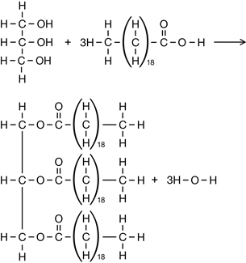
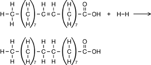
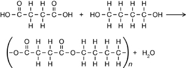

Module 6—Petrochemicals
 Explore
Explore
 Try This
Try This
The Structure of a Polyester
© sirano100/shutterstock
You have probably heard of polyester. Many fabrics are made from this polymer, which is formed by linking monomers with the ester functional group. In this activity you will learn more about the structure of a polyester.
Retrieve the diagrams of the chemical structures of the petrochemical compounds you started using in Lesson 1. Find the diagrams with the chemical structures for the following molecules:
- ethanol
- isopropanol
- ethylene glycol
- acetic acid
- adipic acid
TR 1. Using structural formulas, write balanced chemical equations to describe the six esters that can be formed using these components.
TR 2. Recall that a polymer is a long molecule often containing thousands of monomers. Which one of the esters you wrote in TR 1 has the potential to continue to react to form a long molecule?
TR 3. Write the balanced chemical equation for the formation of a polymer using the monomers identified in TR 2. Ensure that the polymer you show in your answer has at least two of each of the monomer molecules.
Save your work in your course folder, and submit a copy of your response to TR 3 to your teacher.
 Read
Read
condensation polymerization: a reaction in which a water molecule is produced when two monomers are chemically joined
In the Try This activity you just completed, you identified that a polymerization reaction can involve a reaction other than an addition reaction. Condensation polymers and condensation polymerization reactions are very common in industry and in biological systems. Read pages 449–452 in the textbook to learn more about condensation polymers and polymerization reactions.
 Self-Check
Self-Check
SC 1. Complete “Practice” questions 9–11 on page 451 and questions 12–14 on page 452 of the textbook.
Self-Check Answers
Contact your teacher if your answers vary significantly from the answers provided here.
SC 1.
Practice 9.
The unsaturated lipids have a trigonal planar shape around the double bonds, making it more difficult for the molecules to aggregate into a solid. This results in lower melting points than those of the corresponding saturated lipids.
Practice 10.

Practice 11.

Practice 12.

Practice 13.
Carboxylic acid (-COOH) and alcohol (-OH) functional groups must be present to form a polyester.
Practice 14.
The reactions to form fats and to form polyesters are similar because, in both cases, linkages are formed by “condensing out” water molecules. The reactions are different in that fats are only tri-esters, whereas polyesters contain many monomer units.
 Discuss
Discuss
© 2009 Jupiterimages Corporation
Cloth or disposable diapers? This might be a decision that you have to make in the future as you become a parent. Read through “Explore an issue” on page 455 in the textbook.
D 1. In a document, indicate whether you will support cloth diapers or disposable diapers, and list supporting facts. Next, include some insight into making your product choice more green. What materials or processes could be used to make your choice of diaper more environmentally sound?
Post your response in the discussion area for your class, and respond to the opinions of at least two students who do not share your viewpoint. Save your work in your course folder.